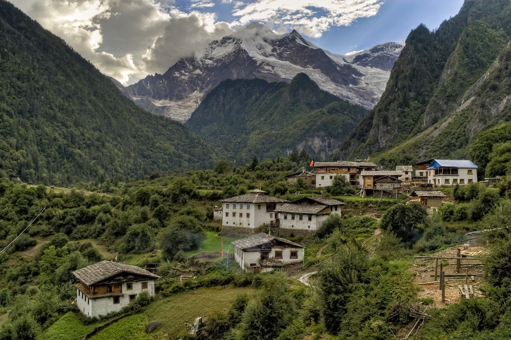
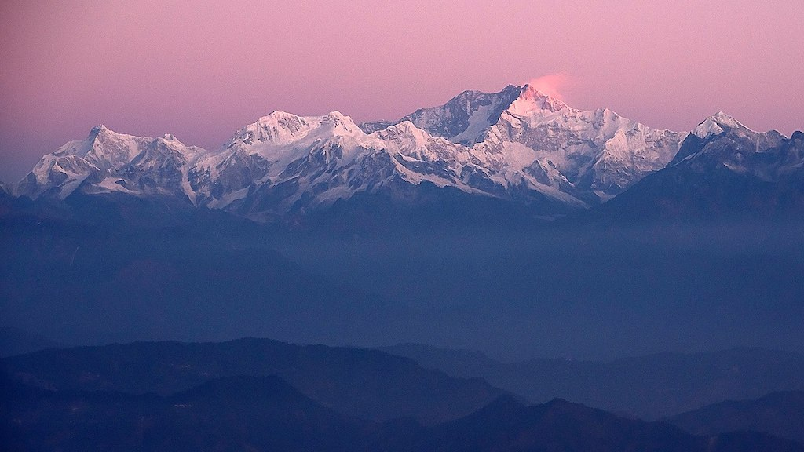

Beatiful village in Eastern Nepal popularly known as Ghale Ghau.Fewa Taal or Fewa Lake of Pokhara with beautiful Machhapuchhrey himal(Fishtail Mountain).

Another village near to Dhaulagiri.
Adventure sports
Adventurous white water rafting in MahaKali Khola.Famous Paraglidding spot in Sarangkot Pokhara.Trekking to world's highest altitude lake(Tilicho Lake).
Religious Side
Hindu temples in Kathmandu.A hindu sage in PashupatiNath templeBuddhist temple in Kathmandu, BoudhhaNath Temple.
Himalayas
Annapurna Himalyan Range.

Mountain Dhaulagiri.Sagarmatha Himal or popularly known as Mount Everest.